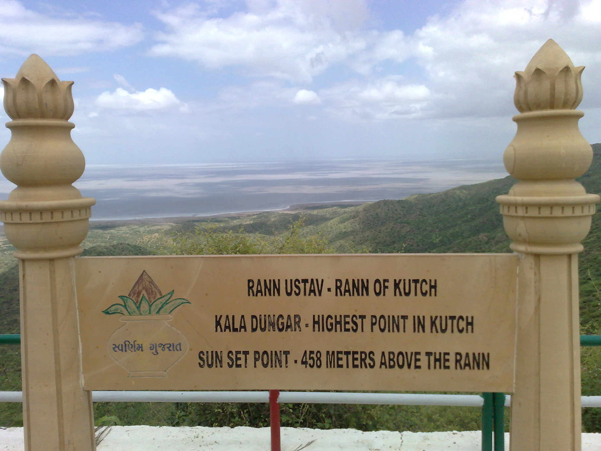
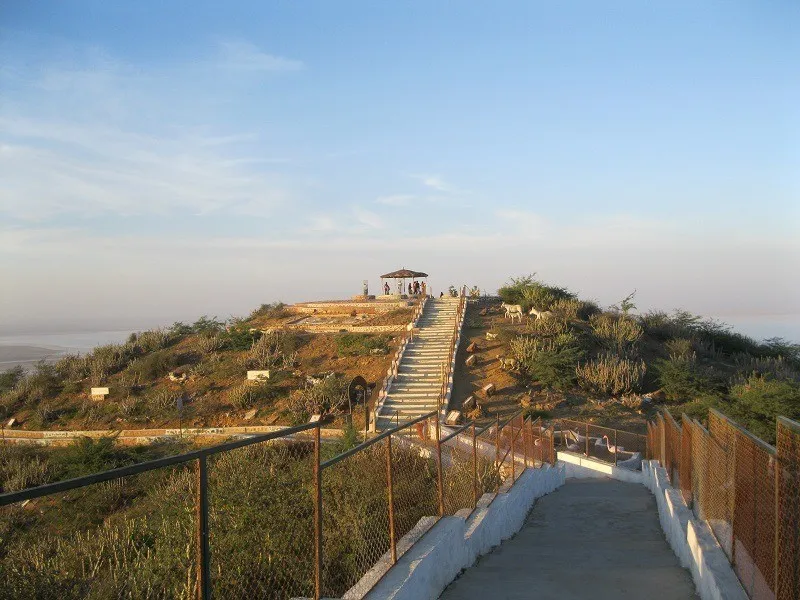
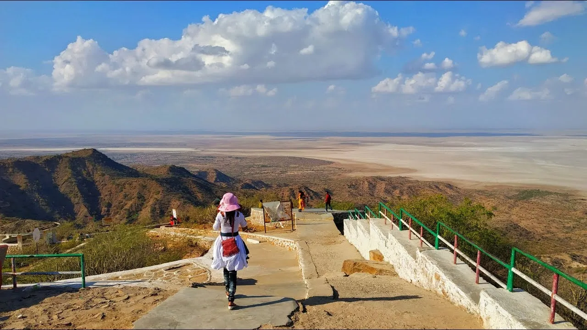

Rising 462 meters above the salt-white plains, Kalo Dungar (Black Hill) is the highest point in Kutch. It offers the only place where you can see the panoramic view of the Great Rann of Kutch. It is also famous for the 400-year-old Dattatreya Temple where priests feed wild jackals every evening—a phenomenon where these shy animals respond to the beating of a plate. The hill is a border area, and from the top, you are looking towards the edge of India.
Who Should Visit
- Landscape Photographers: For the best panoramic shots of the White Rann.
- Wildlife Lovers: To witness the unique jackal feeding ritual at sunset.
- Families: A fun drive with the curious 'Magnetic Hill' experience en route.
- Sunset Chasers: The sunsets here are legendary.
How to Reach
- From Bhuj: 97km | 2.5 Hours. The road passes via Khavda.
- From Dhordo (White Rann): 48km | 1 Hour. Perfect day trip from the Tent City.
- Permit: You need to carry a valid ID Proof (Aadhar/Voter ID) as there is an Army Checkpoint.
- Transport: best reached by private taxi or car. No direct public buses to the hilltop.
Landmarks & Heritage
The defining monuments

Dattatreya Temple & Jackal Feeding
(Sunset/Afternoon) Offer prayers and wait for the evening 'Prasad' for jackals. It usually happens after 4-5 PM.
Magnetic Hill (Gravity Hill)
On the way up, stop at the marked board where your car moves uphill in neutral!
Sunset Point
Walk to the viewing decks for a 360-degree view of the salt desert merging with the sky.
Army Bunker View
You can see the India Bridge and border fence distance (Photography prohibited in some directions).
Curated Local Advice
Monkeys
The hill is infested with aggressive langurs (monkeys). Hide food items!
Wind
It gets extremely windy and chilly at the top, even in afternoons. Carry a light jacket.
Jackals
They are wild animals. Do not try to approach them or feed them yourself.
Suggested Itinerary
00 PM: Start from Dhordo or Bhuj.
30 PM: Stop at the 'Magnetic Hill' point for a demo.
00 PM: Reach the summit. Darshan at the temple.
00 PM: Enjoy the sunset views and watch the Jackal feeding ritual.
30 PM: Drive back down before it gets too dark.
Shopping & Bazaars
- Check local guides for shopping.
Local Eats
- Temple Prasad: Simple meal served at the temple.
- Khavda Sweets: Stop at Khavda town (base of the hill) for its famous 'Mava'.
- No Fancy Restaurants: There are only tea stalls and maggi points at the top.
When to Visit
October to March (Winter): Best visibility and pleasant weather.
Summer: Not recommended as it gets scorching hot and hazy, obscuring the
view.
Nearby Places to Visit
Dhordo (White Rann)
48km — salt desert and Rann Utsav festival site
Khavda
25km — nearest town with basic facilities and accommodations
Bhuj
97km — regional capital and cultural hub of Kutch
Road to Heaven
54km — the famous straight highway through the Rann
Dholavira
~100km — archaeological site of the Harappan civilization
Location & Gallery


